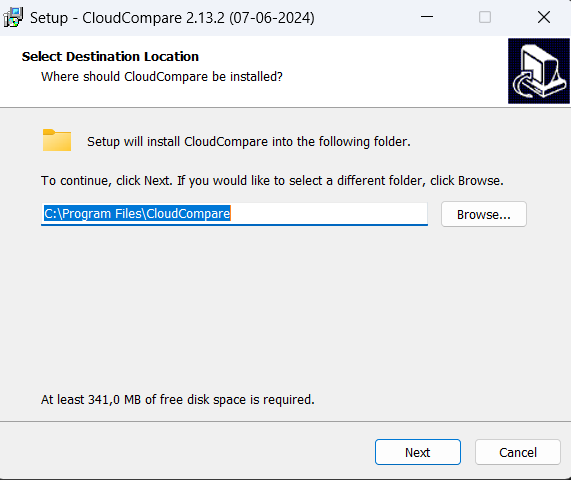
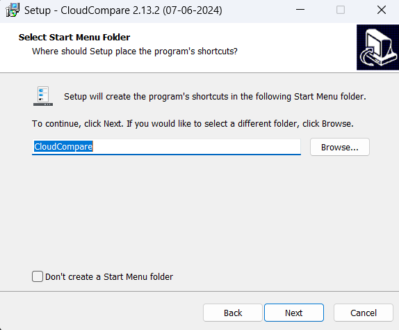
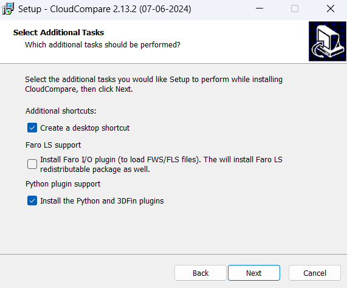
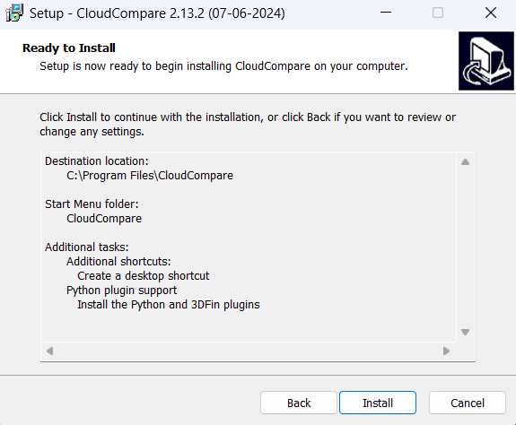

SEABIM Editor is a plugin for CloudCompare 2.13. It is installed
through a turn-key Windows installer that drops the plugin (DLL + Python
scripts) in CloudCompare's plugins/ folder and registers the WIBU
license.
Pre-installation¶
Start from a clean install
If CloudCompare is already installed on the machine (any version), uninstall it first via Control Panel → Programs and Features → CloudCompare → Uninstall.
After uninstalling, manually delete the folder
C:\Program Files\CloudCompare if it still exists: the uninstaller
often leaves residual files behind (old plugin DLLs, Python scripts)
that can prevent SEABIM Editor from loading correctly.
You can then cleanly install CloudCompare 2.13 (step below).
Prerequisites¶
| Software | Version | Link |
|---|---|---|
| Windows | 10 or 11 (x64) | — |
| CloudCompare | 2.13 | https://www.cloudcompare.org/release/CloudCompare_v2.13.2_setup_x64.exe |
| CodeMeter Runtime (license) | latest | https://www.wibu.com/support/user/user-software/file/download/17494.html |
CloudCompare 2.13 required
The plugin is compiled for CloudCompare 2.13. It will not load in version 2.12 or earlier, and has not been tested on 2.14+ builds.
Check access to the update server
SEABIM Editor needs to reach its update server. From the workstation,
open https://update.seabim-utilities.com/health in a browser: the page
must display ok. If it does not respond, check the Internet
connection, the firewall and the company proxy before continuing.
Step by step installation¶
1. Install CloudCompare 2.13¶
Download the Windows installer from the CloudCompare official website and follow the standard procedure, making sure to enable the Python plugins.
   
{kind=link}
{kind=link}
{kind=link}
{kind=link}
2. Install CodeMeter Runtime¶
The WIBU CodeMeter licensing system is required to activate SEABIM Editor. Run the CodeMeter Runtime Kit installer downloaded from the link in the prerequisites and follow the wizard:
- Welcome screen: click Next.
{kind=link}
- Read the license agreement, tick I accept the terms of this license agreement, then click Next.
{kind=link}
- On the Custom Setup screen, click the Network server feature and select Will be installed on local hard drive to enable it (it allows network licenses over port 23350), then click Next.
{kind=link}
{kind=link}
- Click Install to start the installation, then Finish once it is complete.
{kind=link}
3. Run the SEABIM Editor installer¶
Double-click SeabimEditor-Setup-X.Y.Z.exe (provided by your SEABIM
contact) and follow the wizard.
The installer:
- Drops the plugin DLL into
C:\Program Files\CloudCompare\plugins\ - Drops the Python bundle (
scripts/,data-bundled/) in the same folder - Creates the user data folder in
%LOCALAPPDATA%\Seabim\ - Installs the language files (
.qm) FR / EN / AR
4. First activation in CloudCompare¶
- Launch CloudCompare 2.13.
- The SEABIM Editor plugin appears in the main toolbar with its icon.
- Click the icon → the license check runs.
- On success, the SEABIM Editor launcher opens with the tabs
available depending on your Feature Map (for example
Find blocks in a point cloudonly appears if the BlockFinder bit is active on your license).
If no license is active yet on the workstation, follow the detailed License activation procedure.
{kind=link}
{kind=link}
Uninstallation¶
Go through Control Panel → Programs and Features → SEABIM Editor →
Uninstall. The operation removes the DLL and the bundle but keeps
user data in %LOCALAPPDATA%\Seabim\ (parameters, profiles, exchanges).
To start fully from scratch, also remove this folder manually after uninstallation.
Troubleshooting an installation issue¶
| Symptom | Probable cause | Action |
|---|---|---|
| The SEABIM icon does not appear in CloudCompare | DLL not loaded (wrong CC version, or plugin disabled) | Check CC version = 2.13. Go to Plugins → SEABIM Editor in the CC menu. |
| "Invalid license" message on launch | WIBU key missing / not detected | Check CodeMeter Runtime is installed and the license is valid. Open CodeMeter Control Center to confirm. |
Import tab without Find blocks in a point cloud |
BlockFinder bit is not in your license Feature Map | Check with your SEABIM contact for the authorized features. |
| Silent crash at launch | Python error caught | Check %LOCALAPPDATA%\Seabim\log\crash.log. |